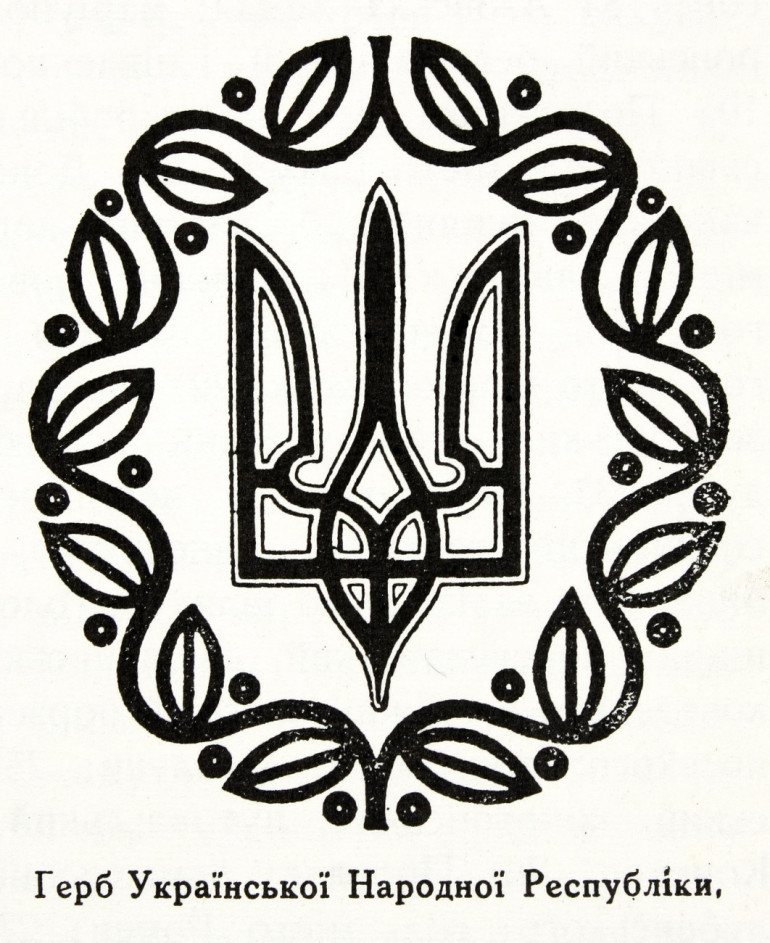
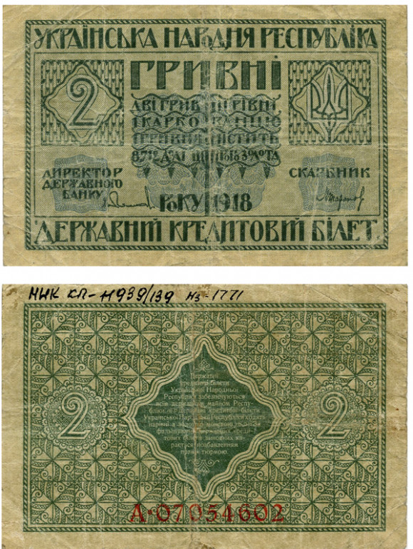
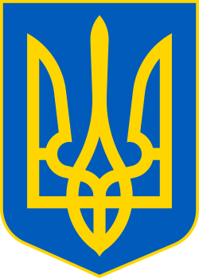

Становлення вільної України
Вперше в ХХ столітті незалежність України було встановлено 22 січня 1918 року текстом IV Універсалу, який проголошував, що «…однині Українська Народна Республіка стає самостійною, ні від кого не залежною, вільною суверенною державою українського народу».
Незалежність України
24 серпня 1991 року Верховна Рада України проголосила незалежність України. Цей день став початком нової ери в історії нашої держави. Відзначається щорічно 24 серпня.
Державними символами України є
За часів Української Народної Республіки у 1918 році затверджено герб, основним елементом якого був тризуб – герб Володимира Великого (без хреста) та гімн – пісню Павла Чубинського “Ще не вмерла Україна” на музику Михайла Вербицького.
Державний герб України – тризуб – є давнім символом українського народу. Він відомий з часів Київської Русі, коли його використовували як герб князівської династії Рюриковичів. Тризуб символізує силу, мудрість і незалежність.
Гімн України – пісня “Ще не вмерла Україна” на музику Михайла Вербицького – є символом боротьби українського народу за свою незалежність. Слова пісні закликають до боротьби за свободу та гідність.
Державним прапором став синьо-жовтий стяг. Синій колір символізує небо, а жовтий – пшеницю, що є основною сільськогосподарською культурою України.

Гривня
Гривня – це національна валюта України, яка була введена в обіг 2 вересня 1996 року. Гривня замінила карбованець, який використовувався в Україні з 1991 року. Гривня є однією з найстабільніших валют у світі та має високу ліквідність.
Від грудня 1918 року на більшості територій відновлено Українську Народну Республіку на чолі з Директорією. Вона ухвалила низку законів, спрямованих на розбудову країни, в тому числі про державну мову, Українську автокефальну православну церкву та встановлення грошової одиниці – гривні.
Боротьба за незалежність України
Імпульс державотворення та національного відродження, який дала Українська революція, був такий потужний, що російські більшовики змушені були з цим рахуватися, запровадивши протягом 1920-х років політику українізації, наслідком якої став підйом національної культури, часткове залучення українців до керівних органів. Створення Української Соціалістичної Радянської Республіки було вимушеною поступкою російської комуністичної влади українському національному рухові. УСРР мала деякі формальні ознаки держави (кордони, органи влади, символіку), проте не було головної – суверенітету. Відтак вона ніколи не була незалежною, ані у вимірі внутрішньої, ані тим паче зовнішньої політики. В міру посилення комуністичного тоталітарного режиму зростала політична та економічна залежність України. Це викликало наростання спротиву, який вилився в рух, спрямований на відновлення незалежності. Український визвольний рух розвивався у формах збройної (1920–1950-ті) та ненасильницької (1960-1980-ті) боротьби. У кінці 1980-х цей рух разом із національно-демократичними революціями у Східній Європі відіграв важливу роль у падінні комуністичних режимів, а в Україні призвів до відновлення незалежності.
Декларація про державний суверенітет України
16 липня 1990 року Верховна Рада УРСР прийняла Декларацію про державний суверенітет. Вона проголосила верховенство, самостійність, повноту і неподільність влади республіки в межах її території, незалежність і рівноправність у зовнішніх відносинах. З 02 жовтня по 17 жовтня 1990 року відбулися акції ненасильницької громадської непокори, заздалегідь організовані українською молоддю, переважно студентами. Стрижнем протестних подій було студентське голодування на площі Жовтневої революції у Києві (нині Майдан Незалежності). Широкомасштабна кампанія отримала назву Революції на граниті. Протести завершилися підписанням постанови Верховної Ради УРСР, яка гарантувала виконання вимог учасників протесту. 24 серпня 1991 року на позачерговому засіданні Верховна Рада УРСР ухвалила Акт проголошення незалежності України, зазначивши у ньому, що продовжується тисячолітня традиція державотворення в Україні, яка має право на самовизначення, передбаченого Статутом ООН та іншими міжнародно-правовими документами.
Нова і вже сучасна незалежна Україна
Відзначення незалежності України стало важливим етапом у розвитку 1 грудня 1991 року відбувся Всеукраїнський референдум, на якому 90,32% виборців підтримали незалежність України. Цей день став днем народження незалежної України. Відзначається щорічно 1 грудня. 5 грудня 1991 року Верховна Рада України затвердила новий державний герб – тризуб, а 28 січня 1992 року затвердила новий державний прапор – синьо-жовтий стяг. 15 березня 1992 року Верховна Рада України затвердила новий державний гімн – пісню “Ще не вмерла Україна” на музику Михайла Вербицького. 24 серпня 1991 року Верховна Рада України проголосила незалежність України. Цей день став початком нової ери в історії нашої держави. Відзначається щорічно 24 серпня.
Остання революція
В Україні відбувалася низка революцій, які мали на меті відновлення Найновіший приклад в історії України – Революція Гідності, що відбувалася з 30 листопада 2013 року до лютого 2014 року, та початок воєнних дій на сході України. Тоді тисячі звичайних українських громадян, кинувши власні справи – навчання, роботу, бізнес, родини – пішли на майдани країни, висловлюючи протест проти протиправного розгону мирної акції студентів та громадських активістів, що розпочалася 21 листопада 2013, а потім зі зброєю в руках першими протистояли озброєній до зубів російській армії… Революція Гідності залишила глибокий, визначальний і незабутній слід в новітній історії України. Вона змінила нашу ментальність, розпочала і продовжує формувати нову політичну ідентичність. Нині, в умовах агресії з боку Росії, Україна продовжує відстоювати власну свободу та цілісність держави. Нажаль, гинуть наші військові, але завдяки патріотам укріплюється віра в українську державність.